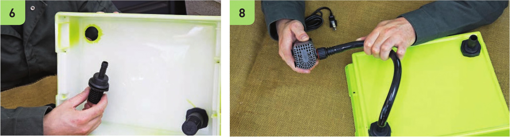

Prepare the Reservoir and Grow Bed Picking a grow bed and reservoir that fit well together is critical. The bottom of the grow bed should fit inside the reservoir and the lip of the grow bed should hang over the edge of the reservoir. 1 Add a strip of tape on the side of the reservoir. Fold the end of the tape under the bottom. This tape will be removed after painting to create a viewing window into the reservoir to check water height. 2 Spray paint the grow bed and reservoir. Make sure they are fully opaque so light does not enter the reservoir, leading to algae growth. I used two layers of spray paint on this garden. 3 Remove the tape once the spray paint dries to create a viewing window. 4 Wearing work gloves and eye protection, drill IW holes in opposite corners of the grow bed. 5 Use a deburring tool to smooth the holes. Assemble the Irrigation System 6 Connect the fill and drain fittings to the grow bed. The drain fitting has a 3A“ connector. Use one riser on the drain fitting. 7 Cut a piece of Vi black vinyl tubing long enough to reach the fill fitting while connected to the pump positioned at the bottom of the reservoir. It is better to have this tube be a little too long rather than too short. 8 Connect one end of Vi vinyl tubing to the fill fitting and the other to the submersible pump. HYDROPONIC GROWING SYSTEMS 95
